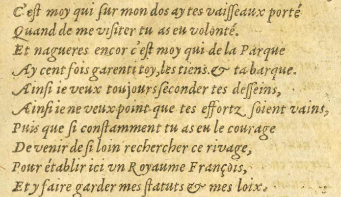
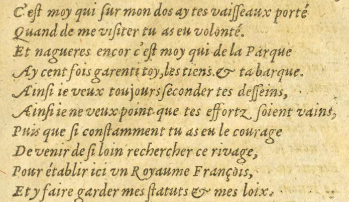
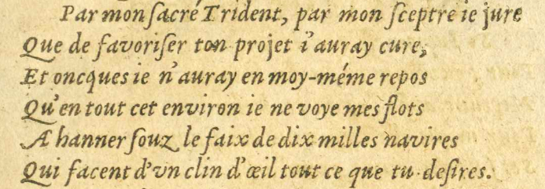
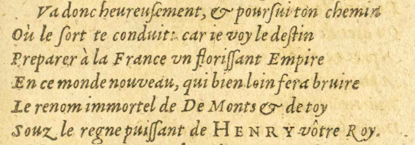
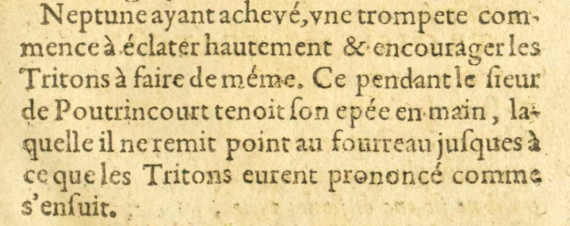
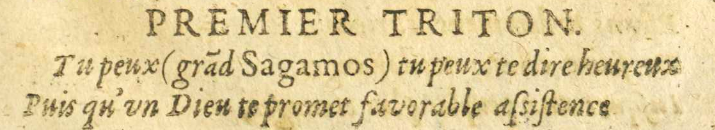

3/11
- C'eſst moy qui ſsur mon dos ay tes vaiſsſseaux porté
- Quand de me viſsiter tu as eu volonté.
- Et nagueres encor c'eſst moy qui de la Parque
 Déesse de la mythologie romaine représentée comme une fileuse contrôlant la vie des
hommes.
Déesse de la mythologie romaine représentée comme une fileuse contrôlant la vie des
hommes. - Ay cent fois garenti toy, les tiens & ta barque.
- Ainſsi ieje veux toujours ſseconder tes deſsſseins,
- Ainſsi ieje ne veux point que tes effortz ſsoient vains,
- Puis que ſsi conſstamment tu as eu le courage
- De venir de ſsi loin rechercher ce rivage,
- Pour établir ici vnun Royaume François,
- Et y faire garder mes ſstatuts & mes loix.
 
- Par mon ſsacré Trident, par mon ſsceptre ieje jure
- Que de favoriſser ton projet ij'auray cure#5,
- Et oncques#6 ieje n'auray en moy-méme repos
- Qu'en tout cet environ ieje ne voye mes flots
- AhannerE09 : A hanner#7 ſsouz le faix#8 de dix millesmille navires
- Qui facent d'vnun clin d'oeil tout ce que tu deſsires.
- Va donc heureuſsement, & pourſsui ton chemin
- Où le ſsort te conduit : car ieje voy le deſstin
- Preparer à la France vnun floriſsſsant Empire
- En ce monde nouveau, qui bien loin fera bruire
- Le renom immortel de De Monts
 Pierre Dugua de Mons, premier colonisateur de la Nouvelle-France et fondateur de Port-Royal. & de toy
Pierre Dugua de Mons, premier colonisateur de la Nouvelle-France et fondateur de Port-Royal. & de toy - Souz le regne puiſsſsant de HENRY
 Henri IV, roi de France de 1589 à 1610. vôtre Roy.
Henri IV, roi de France de 1589 à 1610. vôtre Roy.
Neptune Dieu d'origine latine des eaux vives et des sources, puis des mers. ayant achevé, vneune trompete com-
Dieu d'origine latine des eaux vives et des sources, puis des mers. ayant achevé, vneune trompete com-
mence à éclater hautement & encourager les
Tritons Figures mythologiques de la mer. à faire de méme. Ce pendantCependant le ſsieur
Figures mythologiques de la mer. à faire de méme. Ce pendantCependant le ſsieur
de Poutrincourt Fondateur de la colonie de Port-Royal en Nouvelle-France. tenoit ſson epée en main, la-
Fondateur de la colonie de Port-Royal en Nouvelle-France. tenoit ſson epée en main, la-
quelle il ne remit point au fourreau juſsques à
ce que les TritonsFigures mythologiques de la mer. eurent prononcé comme s'enſsuit.
PREMIER TRITON.
- Tu peux (grãdgrandE17 E18 : grand Sagamos) tu peux te dire heureux
- Puis quPuisqu'vnun Dieu te promet favorable aſssiſstenceE11 E12 : aſssiſstance
